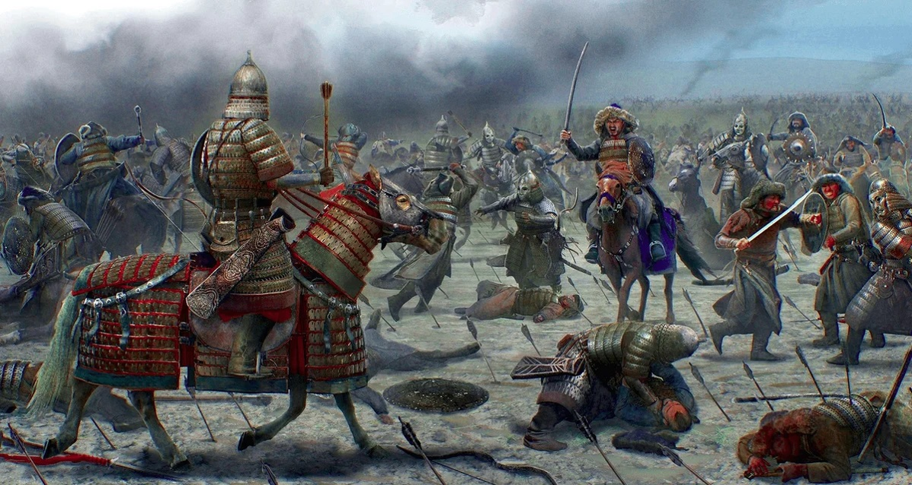
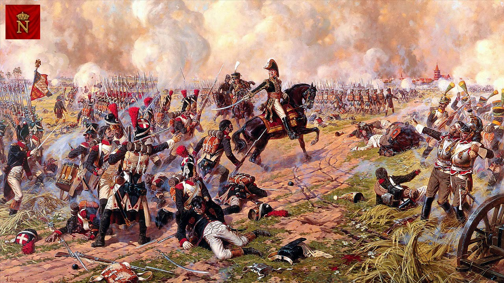
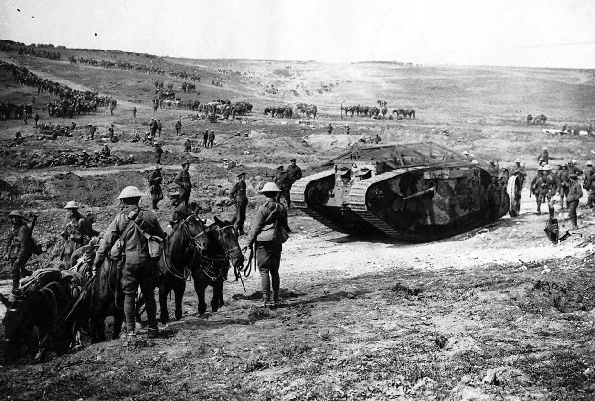
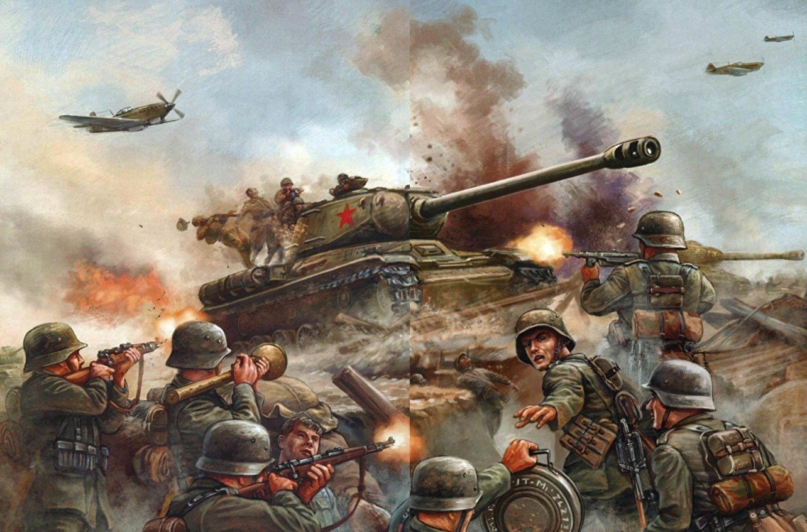
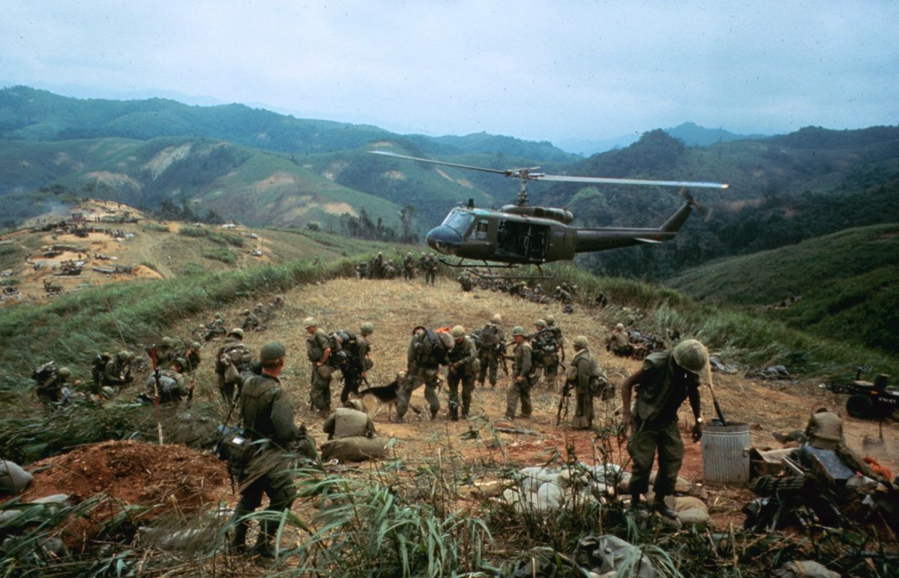

1. Монгольские завоевания - Монголы-кочевники в XII веке, имея сильную и хорошо
организованную армию, решили завоевать новые территории. Первыми на их пути встали Волжская
Булгария и Русь. Первое сражение в 1223 году на р. Калке закончилось разгромом объединенных
войск половцев и русских князей. В 1236 году половецкие войска снова потерпели поражение, на
этот раз уже возле р. Дон. Затем монголы переключились на русские княжества. В 1240 году после
трехмесячной осады был взят Киев. Этот год считается началом татаро-монгольского ига на Руси,
просуществовавшего до 1480 года. В это время произошло «Стояние на р. Угре». Принято считать,
что с этого момента иго было свергнуто.

2. Наполеоновские войны - Одна из самых известных войн в истории. Это период с 1796 по
1815 годы, когда Наполеон пытался захватить соседние и другие государства с целью установить в
них свой политический режим, привить дух свободы и равенства. Конечно, основным противником для
Франции являлась Англия. Она разгромила флот Наполеона в Трафальгарской битве в 1805 году. Затем
создала против Франции коалицию, первое сражение в таком составе состоялось при Аустерлице.
После победы Наполеон прекратил существование Римской империи и захватил Италию. В 1806 году
происходит практически полный захват Наполеоном Пруссии. Далее следует Польша, Португалия,
Испания. Затем Наполеон предпринимает попытку захватить Россию, но терпит неудачу в октябре 1812
года (знаменитое Бородинское сражение). Затем Наполеон терпит крах в битве народов под
Лейпцигом. В 1814 году Франция лишилась всех захваченных земель.

3. Первая мировая война - Первая мировая война началась с августа 1914 года. Это была
война за влияние и господство. Соперниками в ней стали Антанта и Тройственный (а позже
Четвертичный) союзы. На рубеже XX века просто отбирать все необходимое у более слабых государств
ни одна страна не могла себе позволить. Выход был один: наращивать мощь и влияние в регионах. В
это время на политической арене сформировались две мощные державы: Российская империя и
Германия. Англии лишь оставалось умелой политической игрой столкнуть их лбами. И вот в августе
1914 ей это удалось. Но Россия не завершила подготовку и совершенно ослабела в ходе войны, затем
пережила революцию и подписала мирный договор. Страны Антанты сумели вынудить Германию подписать
полную капитуляцию в 1918 году, в это время там тоже происходила революция.

4. Вторая мировая война – это самая кровопролитная и известная война XX века, которая длилась
6
лет. В нее было вовлечено практически 80% населения Земли, бои происходили на территориях 40
стран. Это была война двух коалиций. Началась она в 1939 году с нападения Германии на Польшу.
Дальше последовало нападение на Францию, оккупация Дании, Бельгии, Голландии, Норвегии. В июне
1941 года Германия начинает наступление на Советский Союз. С ноября 1942 года и весь 1943 год
происходит коренной перелом в войне, в ходе которого Германия теряет стратегическую инициативу.
С 1943 года по 1945 год войска Германии отступали. 9 мая 1945 года немцами был подписан акт
капитуляции. Далее война велась на территории Юго-Восточной Азии и Дальнего Востока. США
применили ядерное оружие при бомбардировке Японии. Война завершилась после капитуляции Японии 2
сентября 1945 года.

5. Вьетнамская война - Еще одна известная война XX века. Она началась в 1957 году, и
происходила
между Северным и Южным Вьетнамом. Фактически, это была битва капиталистических и
коммунистических коалиций. На самом деле война затронула также территории соседних Лаоса и
Камбоджи. Завершилась она после покорения Сайгона в 1975 году. Мирное соглашение было подписано
еще в 1973 году, но военные действия не прекращались. После захвата Сайгона обе части Вьетнама
были объединены и провозглашены коммунистическим государством.